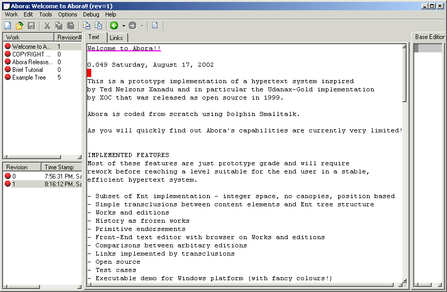
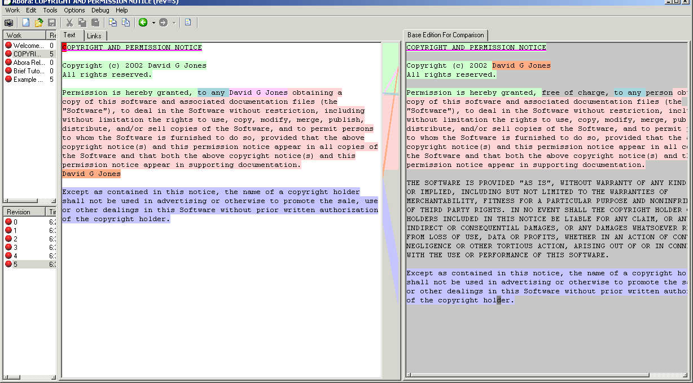
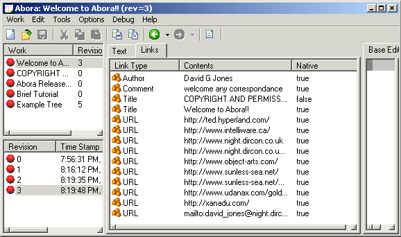
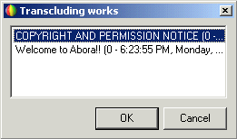
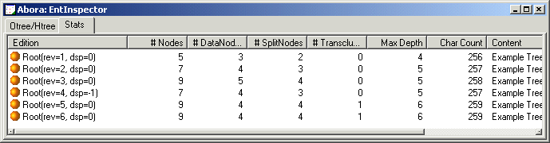

Developer inspector to investigate Ent-like tree used to store the data for all editions of a Work.
The following images are a series of screenshots from the Dolphin prototype/demo executable. This was developed during the Summer of 2002 to investigate a cheap reimplementation of a subset of the Udanax-Gold server and explorations into Xanadu UIs. The result is very rough, but starts to hint at some of the interesting features that come out of the basic design.
Currently Abora-White, the main focus of development, is too early in its life to any where near producing interesting screenshots.

Simple Text editor that allows inserts, deletes and simple
transclusions, together with a list of known Works, and
associated Editions/Revisions. The first line of the text is
underlined to indicate it is part of a link, in this case a link
of type Title. The title link is used to populate the names of
the works seen in the top left Works pane.

Comparison between the original edition of the work on the
right, and the latest on the left. The colors highlight section
which are the same between the two editions. So the first
green section indicates COPYRIGHT AND ... is the same.
The Highlighting of David G Jones shows that it can be
found in the same location in the left edition, but has also
been transcluded/copied twice further down the edition. A
standard documentation/versioning system such as CVS would not
be able to connect together the copied David...s. Finally
free of charge, and person and the section in
capitals have been deleted in the new edition.

Simple listing of all links that are associated with the content included in the edition.

List of all other works that share the same content as the current work. This can be
for all the text of the current work or just its current selection.
Developer inspector to investigate Ent-like tree used to store the data for all editions
of a Work.

Developer statistics on the size and makeup of an Ent tree.